Windows Autopilot Device Association gives Device Preparation something it didn’t originally have: a way to recognize the device’s organization BEFORE the user signs in. That makes it possible to retrieve settings early enough to change OOBE, the out-of-box experience. But what actually happens between exporting a CSV and seeing the organization’s setup screens?
There is a device that first appears as Pre-associated, a TPM-backed identity to prove, and a signed association that ends up in UEFI firmware. Windows also needs to find the right service for the tenant and download the settings. Those are separate operations, and none of them is the Intune enrollment itself.
Why Device Preparation needed an earlier device identity
With classic Windows Autopilot, the device is registered BEFORE deployment. During the OOBE, Windows contacts the Autopilot service, which matches the device to that registration and returns its assigned Autopilotprofile. Windows can then use the Autopilot profile to change the setup experience before asking the user to sign in. With it, you could hide the privacy screen or define the computer name.
{kind=link}
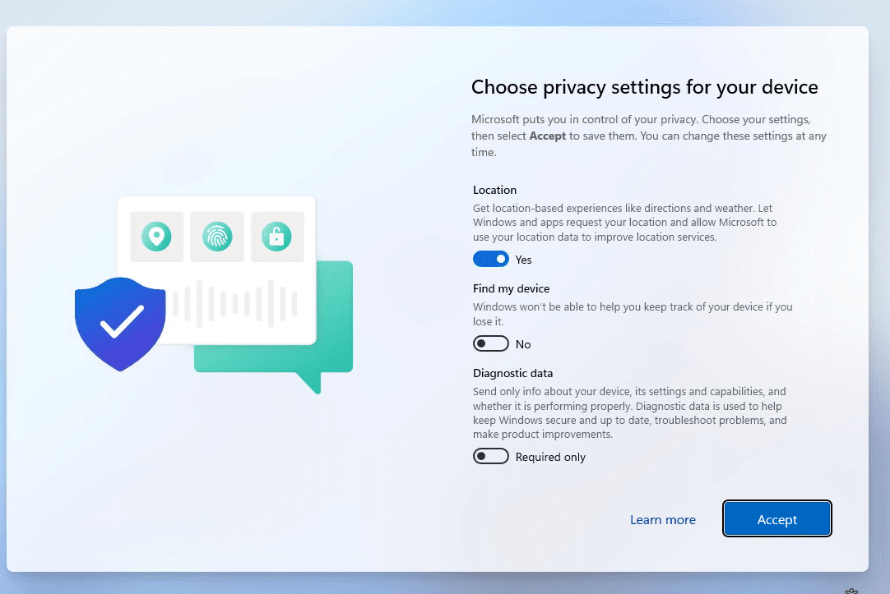
The original user-driven Device Preparation flow starts differently. It does not require that classic hardware-hash registration. The user signs in, Windows learns the tenant, and enrollment and provisioning continue with that organizational context.
That works for deploying applications and configuring Windows. It is too late for a setting that should have changed a page the user has already passed. If OOBE has already asked for a keyboard layout, receiving an instruction to skip that page after sign-in does not help.
Device Association moves the device-to-tenant relationship earlier. An administrator first imports the identity of the physical device the organization expects. Windows then proves its device identity and stores the issued device association tag in firmware. OOBE can use that association before a user account identifies the tenant.
| Classic Autopilot | Original user-driven Device Preparation | Device Preparation with Device Association | |
| Before sign-in | Registered hardware can be matched to its tenant. | Tenant context comes from the user signing in. | The device can establish its tenant device association before enrollment. |
| What Windows receives | An assigned Autopilot deployment profile. | Tenant and policy context after authentication. | OOBE settings from the device-assigned Device Preparation policy. |
| Why it matters | The profile can shape OOBE before sign-in. | Early setup pages have already been reached. | Device-specific OOBE settings can arrive before sign-in. |
The policy is still a Device Preparation policy. Device Association lets Windows retrieve its device-specific OOBE configuration earlier; it does not turn it into a classic Autopilot deployment profile. Microsoft’s Device Association overview describes the persistent relationship as a tenant affinity marker in UEFI.
Following the twelve Device Association steps
Device Association starts by exporting the device’s identity data from OOBE and importing it into Intune, where the device becomes Pre-associated and can be assigned a Device Preparation policy. When OOBE continues, Windows discovers which tenant expects the device and uses its TPM-backed identity and Azure Attestation to prove its identity. The service returns a signed association, which Windows stores in UEFI and then acknowledges to the service, completing the device association process. Windows then retrieves the assigned OOBE configuration, allowing the policy to control setup screens and device naming before anyone signs in. After the user signs in, the device joins Microsoft Entra ID, enrolls in Intune, and continues through Device Preparation to install the assigned apps and run the assigned scripts.
{kind=link}
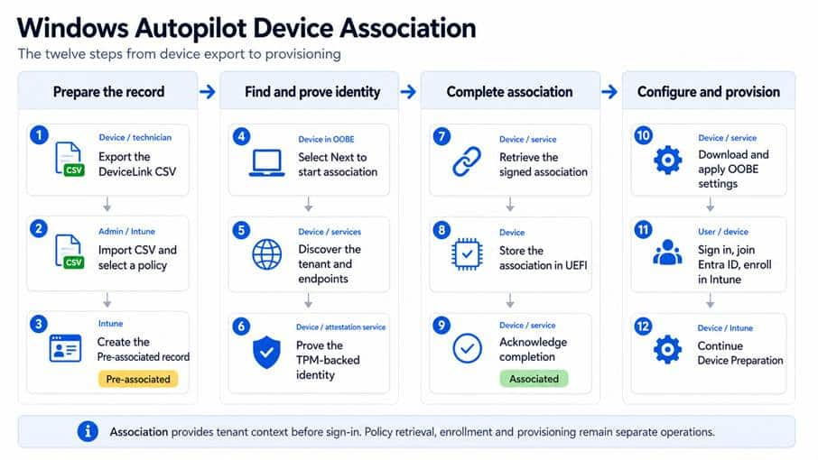
The twelve main steps on the successful path. Read the four phases from left to right, with each phase’s steps running from top to bottom.
Steps 1–9 establish the Autopilot Device association. Step 10 uses that relationship to retrieve OOBE settings. In Step 11, the user signs in, and Windows joins Microsoft Entra ID and enrolls in Intune. Step 12 covers the provisioning work. This order also helps with troubleshooting: an associated device can still have a policy-download or application-installation problem.
We will follow a new Autopilot Device association through the manual OOBE path. Reusing an existing association is a shorter route, which we will return to after the twelve steps.
Step 1: Export the device identity
Start on the device while it is still in OOBE. Press the Windows key five times quickly, then open the device association option by clicking the “assign device association” button.
{kind=link}
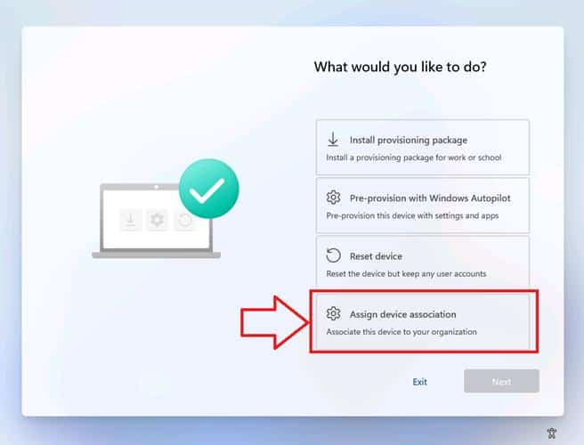
The association option in the lab’s OOBE Autopilot menu. Menu labels can differ between Windows builds.
The next page offers a QR-code route and an Export device information link. You need supported physical Windows 11 hardware with an enabled, healthy TPM 2.0; virtual machines are not supported. Check Microsoft’s current requirements for the required Windows updates, network access, licensing, and permissions before testing.
It looks like a simple export page, but Windows does quite a few things before it lets us continue. This smaller flow follows those checks and the CSV export.
{kind=link}
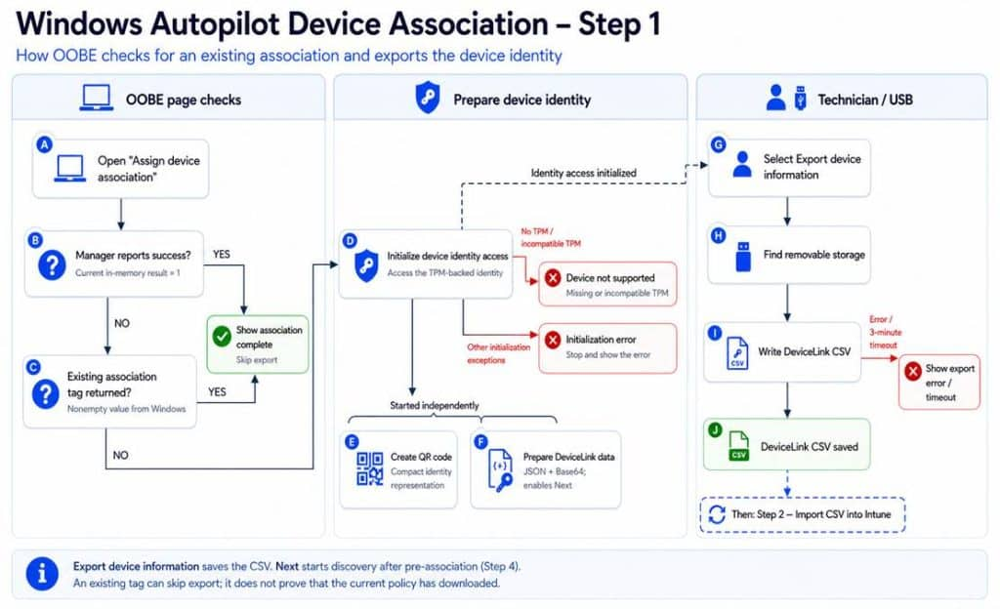
A. Open the Device Association page
Selecting Assign device association opens the page responsible for the identity export and, later, the association attempt.
{kind=link}
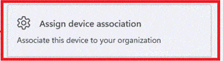
Before preparing the export, Windows runs the two separate checks at B and C. Both can lead to the completion screen, but they look at different things.
B. Check the current configuration result
A result of 1 means successful configuration. If the manager reports that value, OOBE moves straight to the association completion screen and skips preparing another export.
If it does not report success, Windows moves to C. The device may already carry an association in firmware even when the current manager does not report a successful result.
C. Check for an existing device association tag
The second check asks Windows for the existing association JWT through the setting named CloudAssignedDeviceAssociationTag. In the inspected code, Windows reads the compressed firmware data, decompresses and parses it, and returns the association token as text.
{kind=link}
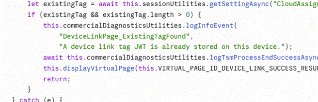
The screenshot below shows the backing UEFI variables. The top entry, DeviceLinkJwtCompressed, is present and contains 1,409 bytes. This confirms that data is stored there; the script has not validated its signature. We will decode its contents in Step 8.
{kind=link}
If Windows returns a nonempty tag, OOBE takes the same completion-screen shortcut and skips preparing a QR code or CSV export. If no tag is returned, or the lookup fails, the page continues to D.
The page is checking the returned tag, not downloading the current OOBE policy. Seeing this completion screen therefore does not prove that the device has already received its settings.
D. Initialize access to the device identity
If neither check takes the shortcut, Windows initializes the component that provides access to the device’s TPM-backed identity.
{kind=link}
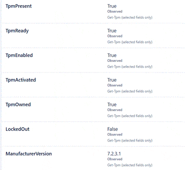
The TPM matters because the device later needs to prove it can use the private key for that identity.
A missing or incompatible TPM sends the page to the unsupported-device result. Other initialization errors use the error result. If initialization succeeds, Windows starts E and F independently: one prepares the QR representation, and the other prepares the data used to continue.
E. Create the QR code
One task prepares a compact representation of the device identity for the QR code. Windows minimizes the JSON, compresses it, encodes it using URL-safe Base64, and wraps the result in a URI.
Those transformations make the data suitable for a scannable code…. If we had something we could scan the QR code with, that would be amazing… but we haven’t… (no companion app)
F. Prepare the DeviceLink data
Windows also prepares the device’s identity data as Base64-encoded JSON. This information goes into the CSV’s Data column when you export it. Decoding that long string reveals the inventory details, DeviceLink identifier, public-key information, and signature.
{kind=link}
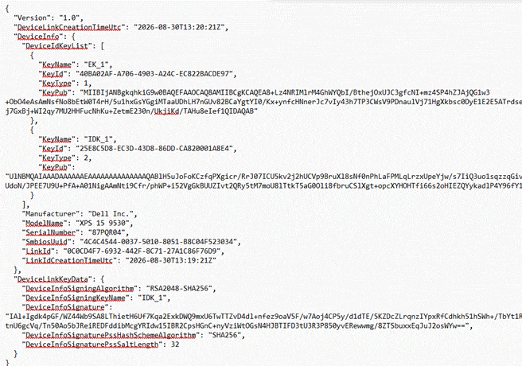
In the sample export, the identity key is named IDK_1. Its public portion can travel in the export. Using the corresponding private key requires the TPM-backed key on the device. That is what lets Windows later prove more than possession of a copied CSV.
When this preparation succeeds, Windows enables the “Next” button. That only means the identity data needed to continue is available. It does not mean Windows has saved a CSV or that Intune has imported it.
At this point, Windows has prepared the data but has not saved the CSV yet. This package identifies the device for pre-association; the tenant’s signed association is obtained later.
G. Select Export device information
The technician selects Export device information to start the CSV export. Windows temporarily disables this action while the export runs, preventing another export from starting at the same time.
{kind=link}
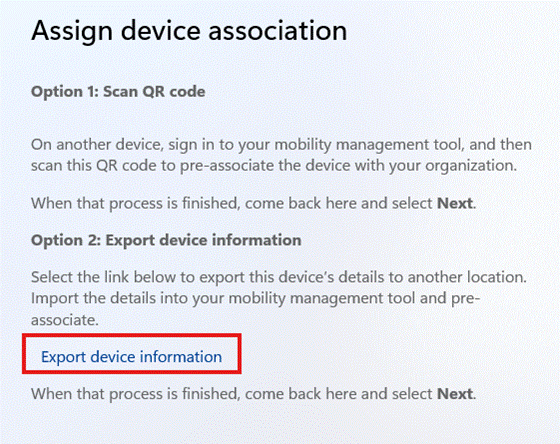
Next is a separate action. It starts discovery and association, which we will use after the import in Step 4.
H. Find removable storage
Windows requests an export location on removable storage, such as a USB drive.
If it cannot obtain that location, the page displays an export error. The identity data may already be available, but Windows still needs somewhere to save the file.
I. Write the DeviceLink CSV
Windows writes the DeviceLink CSV to the selected location. The file contains readable inventory columns and a larger encoded data field carrying the identity package and signature.
{kind=link}
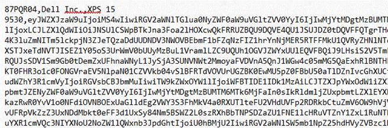
J. Confirm that the CSV was saved
When the write completes successfully, Windows displays the export confirmation. The CSV is now ready for the administrator to import into Intune in Step 2.
{kind=link}
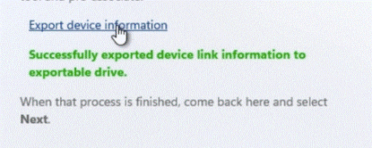
Saving the CSV has not associated the device with the tenant. First, the administrator imports it to create the Pre-associated record. Then we return to the device and select Next in Step 4.
Step 2: Import the CSV and select a policy
In Intune, go to Devices > Enrollment > Device association > Devices and select Add. Upload the DeviceLink CSV. The wizard also lets you assign a Device Preparation policy directly to the device. That assignment is optional; for this walkthrough, select the policy whose OOBE settings the device should receive.
{kind=link}
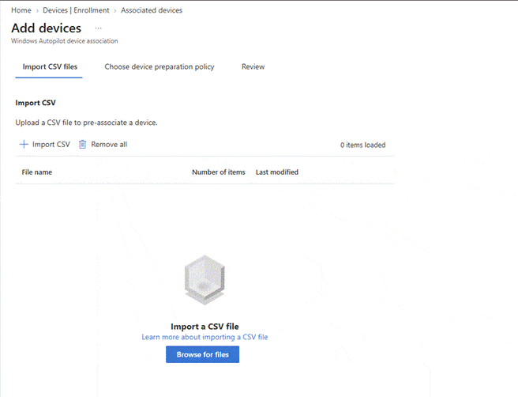
Selecting the policy here connects the intended setup configuration to this physical device. Without a device assignment, the documented fallback is the policy assigned to the user who later signs in; that cannot supply this walkthrough’s device-targeted settings ahead of that sign-in. Microsoft’s association tutorial also specifies one device per CSV file.
Step 3: Intune records the device as Pre-associated
After import, the device appears as Pre-associated. Intune has a record of the device the organization expects and, in this example, the selected policy. The device has not yet completed the hardware proof and received its final association.

If discovery cannot find the device later, this is the first checkpoint: did you import the correct device’s export, into the correct tenant, and does the record appear in the list?
The import gives the service an identity to match. The device still has to demonstrate the corresponding TPM-backed identity before the association sequence can finish.
Step 4: Start the Autopilot Device Association attempt in OOBE
Return to the association page and select Next. The page switches to a progress view and starts discovery. This is the manual path followed here; Microsoft also documents automatic association when a pre-associated device connects to a network in OOBE. A reboot is not required just to use the manual Next action.
Windows first sends the DeviceLink information prepared in Step 1 to the pre-association discovery service. The reply identifies the tenant and its enrollment discovery address. Once those details are available, Windows starts the configuration operation that will discover the remaining endpoints, obtain attestation evidence, retrieve the association, write it locally, and acknowledge completion.
{kind=link}
Step 5: Find the tenant and its service endpoints
A device being associated for the first time does not yet know which tenant to contact. Windows therefore starts with a global pre-association discovery address. The inspected client contains:
https://aps.windowsautopilot.microsoft.com/ztd/devicelink/preassociationDiscovery
Windows submits its DeviceLink information and receives the tenant identifier and an enrollment discovery URL. This first exchange answers which organization expects the device and where Windows should ask for that organization’s service endpoints.
{kind=link}
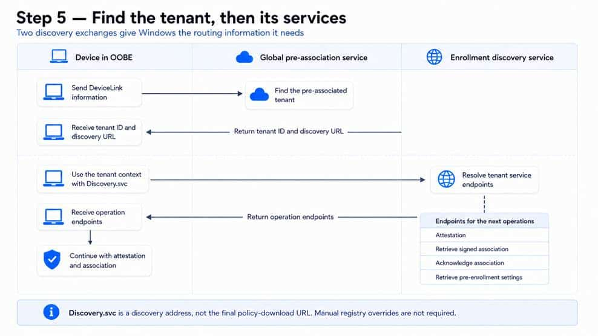
The registry capture shows the first exchange’s routing information under HKLM\SOFTWARE\Microsoft\Provisioning\AutopilotSettings. The value names combine a DeviceLink identifier with _DiscoveryUrl and _TenantIdHint. In this lab, those values identify https://enrollment.manage.microsoft.com/EnrollmentServer/Discovery.svc and the tenant GUID.
{kind=link}
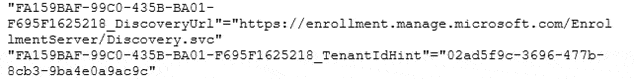
The prefix on these two value names matches the linkId in the later decoded association. The values provide routing context; setting a tenant hint by hand would not replace the device’s hardware proof.
Windows then contacts the enrollment discovery service using that tenant context. The response provides addresses for retrieving the signed association, acknowledging it, obtaining attestation, and requesting pre-enrollment settings. Discovery.svc is the starting point for this exchange, not the final policy-download URL.
The two discovery stages are why a single URL does not describe the whole process. Keep the address returned for this tenant separate from a manually configured test override, and do not copy one lab’s regional gateway address into every device.
Step 6: Prove the TPM-backed device identity
Discovery tells Windows where to continue. It has not yet proved that the computer making the request is the physical device represented by the imported record. Someone could copy the CSV; that does not give them the ability to use the corresponding private key in this device’s TPM.
Windows prepares evidence about the TPM-backed identity and submits it to Microsoft Azure Attestation, or MAA. The attestation service evaluates that evidence and, on success, returns a signed token. Windows can present this token when it asks the provisioning service for the association.
{kind=link}
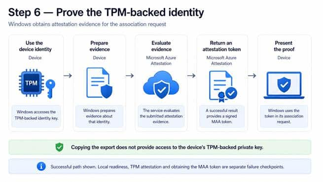
There are different keys involved. The endorsement key, or EK, belongs to the TPM and helps establish its authenticity. An Attestation Identity Key, or AIK, supports attestation of TPM-backed operations. The DeviceLink identity key, or IDK, is the identity used for the link data. That is why the sample export can contain separate EK_1 and IDK_1 entries without those names referring to the same key.
The returned token travels in a field named maaJwt. JWT means JSON Web Token: it carries claims and, in this case, a signature that the receiving service can validate. Here the claims concern attestation. This token is not the tenant association that Windows will store in firmware in Step 8.
Microsoft’s TPM attestation documentation explains these underlying key roles. The client code shows the requests and how Windows handles their results; it does not reveal every rule the Device Association service uses to accept or reject a device.
Windows now has the attestation material needed for the association request. No Entra join or Intune enrollment has taken place as a result of this proof alone.
Step 7: Retrieve the signed device association
Windows asks the provisioning service for the signed DeviceLink association. The service can use the device identifiers and attestation evidence to evaluate that request against the pre-associated device. The result we want is the tenant’s signed association, not another inventory export.
The inspected client’s default field list for this request contains, contextId, linkId, tpmKeyId, maaJwt, and deviceLinkJson. The first four supply the request context, link and key identifiers, and attestation token. The fifth is an additional DeviceLink JSON field. This list comes from the client code; it is not a captured HTTP body showing the exact contents sent in this lab run.
The request has a different purpose from the acknowledgement in Step 9. Requesting the association asks for the signed result. Acknowledging it later reports that Windows has completed the local apply operation.
Windows supports receiving the association directly or retrieving it from a download location returned by the service. That gives us another useful failure boundary: discovery and attestation may have worked even when downloading the signed association fails.
{kind=link}
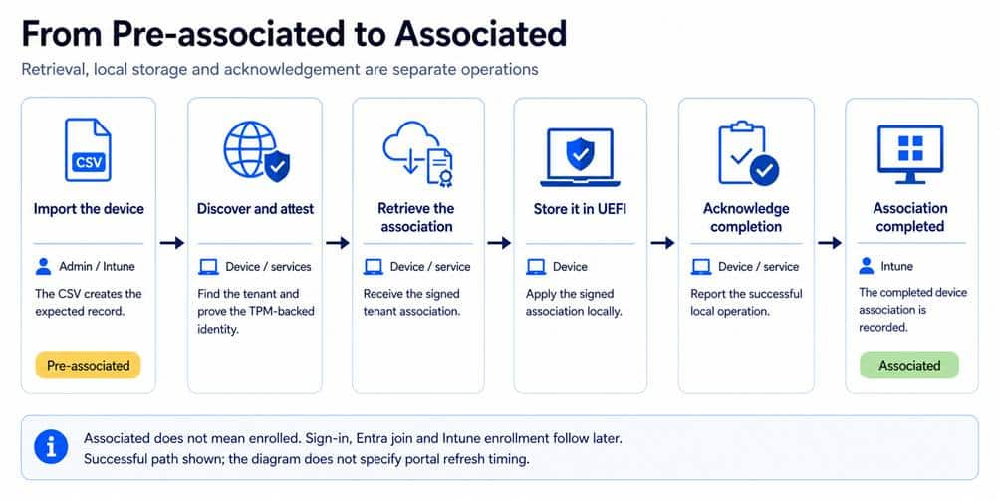
Downloading the association finishes this step, but it does not finish the sequence. Windows must first store what it received and then acknowledge the completed local operation.
Step 8: Store the device association tag in UEFI
Windows applies the signed association by writing it into UEFI firmware storage. This is outside the Windows installation, which is what makes the association useful after a reinstall.
{kind=link}
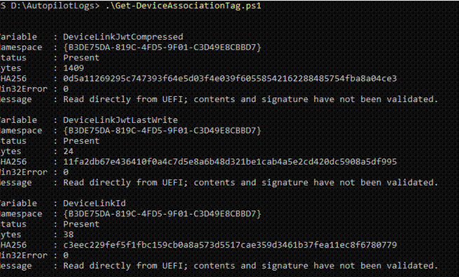
The DeviceLinkJwtCompressed holds the compressed association. It is accompanied by DeviceLinkJwtLastWrite and DeviceLinkId under the UEFI namespace {B3DE75DA-819C-4FD5-9F01-C3D49E8CBBD7}. The first value contains 1,409 bytes. Reading those bytes proves that data exists at that location; it does not validate the token.
The decoder identifies gzip compression and UTF-8 text. After decompression, the data is a JWT with a header, payload, and signature. The header identifies RS256, and the signature in this sample is 256 bytes. The decoder explicitly reports that signature validation was not performed, so its displayed claims must be treated as unverified output.
The payload explains what the association carries. It includes the tenant ID, DeviceLink ID, TPM identity-key ID, device inventory, public-key information, and the enrollment discovery URL. There are also issuer, audience, and time claims. Those fields describe the association and its context; they are not instructions to hide an OOBE page.
A shortened selection of the decoded fields makes the structure easier to read. The identifying values below are masked; this is not the entire token:
{
“linkId”: “<device-link GUID>”,
“tpmKeyId”: “<identity-key GUID>”,
“tenantId”: “<tenant GUID>”,
“deviceModel”: “Latitude 3540”,
“deviceIdKeyType”: “IdentityDeviceKey”,
“discoveryUrl”: “<enrollment discovery URL>”
}
A link ID identifies the DeviceLink relationship. A key ID identifies the TPM-backed identity involved. The signed association JWT carries claims about that relationship. These values belong together, but they are not interchangeable.
When Windows exposes this association as CloudAssignedDeviceAssociationTag, it returns the token text through the Autopilot settings path. It is not returning the whole Device Preparation policy. Windows still has to retrieve the current OOBE configuration, which is where Step 10 comes in.
Step 9: Acknowledge the completed association
{kind=link}
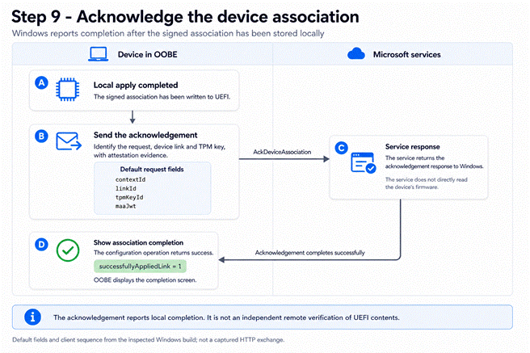
A. Local apply completed
The signed association has been downloaded and written to UEFI. Windows proceeds to the acknowledgement only after that local apply operation succeeds. One job remains: report the completed operation to the service.
B. Send the acknowledgement
Windows contacts the acknowledgement endpoint obtained during discovery. Its default field list contains contextId, linkId, tpmKeyId, and maaJwt: the request context, link identifier, TPM key identifier, and MAA attestation token. That attestation token is separate from the association JWT stored in UEFI. The default acknowledgement list does not include the deviceLinkJson field from the earlier association request.
C. Handle the response
Windows waits for the response and checks the outcome. This is the device reporting that it completed the local operation. The acknowledgement is not the service independently reading back the contents of the firmware.
If acknowledgement fails, the attempt does not return a successful configuration result, even though the local write has already succeeded. That is why finding the tag afterward does not, by itself, prove that every operation in the attempt completed.
D. Show association completion
Back in Intune, the lab device now shows Associated. It still shows Not enrolled. We have established the device’s association with the tenant; we have not enrolled this Windows installation yet.
{kind=link}
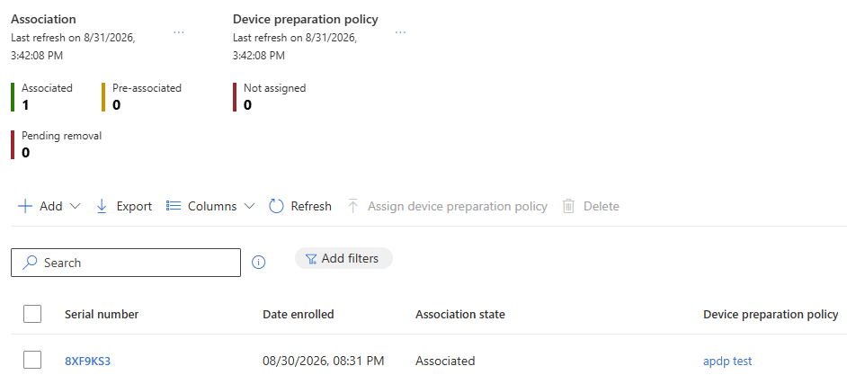
Step 10: Retrieve and apply the device’s OOBE settings
The association is now in place, so Windows can identify the tenant before anyone signs in. It still needs the instructions for this device’s setup. The association answers which organization the device belongs to; the downloaded policy supplies the OOBE configuration.
The A–E flow below follows that connection from firmware to the setup screens: load the association, request settings, receive the applicable policy, save it locally, and use the settings as OOBE continues.
{kind=link}
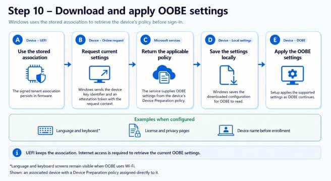
A. Use the stored association
Windows starts with the association stored in UEFI. The decoded example in Step 8 contains the tenant ID, link ID, device-key information, and enrollment discovery URL. Together, these give Windows device and tenant context for finding the organization’s services.
That JWT is exposed through CloudAssignedDeviceAssociationTag. Its presence makes the association available to the settings path. It does not itself select a keyboard layout, hide a license page, or supply a naming template.
B. Request the current settings
Windows resolves the tenant’s service endpoints using its discovery context. One returned address identifies the pre-enrollment settings operation: RetrievePreEnrollmentSettingsUri. This is where the settings request goes; it is not simply a download from the Discovery.svc address shown in the registry.
{kind=link}
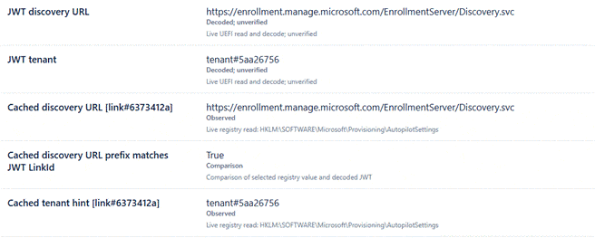
The evidence report above compares the link and tenant context exposed locally; it is not a network capture. In the inspected code, the default settings request uses these three fields:
{
“contextId”: “<request context identifier>”,
“tpmKeyId”: “<device identity-key identifier>”,
“maaJwt”: “<Microsoft Azure Attestation token>”
}
These are illustrative values, not a captured request. The context ID identifies the request context, the key ID identifies the device key, and the MAA token supplies attestation evidence. This explains how Windows can ask for settings before a user supplies an organizational account.
C. Return the applicable policy
Microsoft documents that a device-targeted policy takes precedence over a user-targeted policy. Without a device assignment, the fallback is the policy assigned to the user who signs in, if one is assigned. That is why selecting the device’s policy in Step 2 matters for this early OOBE configuration. The assignment behavior is described in the Device Preparation policy guidance.
D. Save the settings locally
Windows saves the downloaded tag-policy configuration locally so the OOBE components can read it as setup continues. The implementation uses the AutopilotTagPoliciesFile.json, and the directory capture below confirms this location on the lab device:
C:\Windows\ServiceState\wmansvc\AutopilotTagPoliciesFile.json
{kind=link}
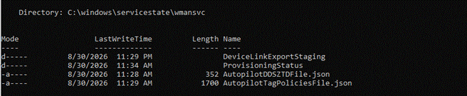
The local policy JSON below shows the resulting settings. It contains the deployment policy name and identifiers, download information, language and region, naming values, and CloudAssignedOobeConfig. That last value combines several OOBE options into one number; it is a bitmask, not another policy identifier.
{kind=link}
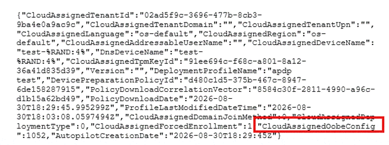
Selected local policy JSON. The OOBE flag value is 1052, and both device-name fields still contain test-%RAND:4%, the template rather than the resolved hostname.
The local JSON also contains the policy and download context, which is more useful than checking only whether a file exists. In this capture, the language and region are os-default. The two name fields contain the same template. We will check the actual computer name at sign-in in Step 11.
Another place to inspect is the shared Autopilot registry cache at HKLM\SOFTWARE\Microsoft\Provisioning\AutopilotPolicyCache. Its PolicyJsonCache value can hold policy JSON, while ProfileAvailable is an availability flag.
That shared cache can also contain data from another Autopilot path or an earlier run. Compare the tenant, policy identifiers, and download information with the device and run you are investigating. A file or cache entry existing is useful evidence, but it does not establish that the current attempt downloaded a new policy successfully.
E. Apply the OOBE settings
OOBE consumes the available settings as setup reaches the relevant pages. The lab policy requests automatic keyboard configuration and hiding the EULA, privacy, and change-account options. Language and region remain at the operating system defaults, so this example does not demonstrate changing the display language.
{kind=link}
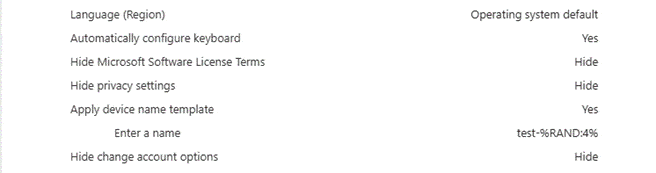
Receiving those settings does not guarantee that every screen disappears in every setup path. Microsoft documents that language and keyboard screens are not hidden when OOBE uses Wi-Fi. Hiding the change-account options also depends on Microsoft Entra company branding being configured. These are documented OOBE conditions, so seeing one of those pages is not enough to diagnose an association failure.
The device still needs internet access to retrieve current policy. A valid firmware association can coexist with a settings-download failure caused by DNS, connectivity, or the service response. Check where the flow stopped: does Windows have the association, can it reach the resolved endpoint, and is the expected policy available locally?
Step 11: Sign in, join Entra ID, and enroll in Intune
OOBE proceeds to the organization’s sign-in screen. The user authenticates, and Windows continues through Microsoft Entra join and Intune enrollment. Device Association supplied the device context early enough for the OOBE policy to be available before this point.
{kind=link}
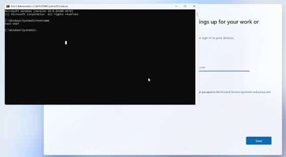
The organization’s sign-in screen, with the computer name checked locally.
The screenshot also gives us a concrete naming checkpoint. The command prompt reports test-3947 while the device is still at sign-in. The local policy contained test-%RAND:4%; Windows has already resolved the template into an actual computer name. That matches the policy’s enabled naming setting and Microsoft’s documentation that naming occurs before enrollment.
Entra join and Intune enrollment still have their own requirements and failure points. Association does not bypass authentication or licensing. Microsoft also documents that associated devices are treated as corporate-owned. Corporate recognition, OOBE customization, and completed enrollment remain separate things to check. I discussed that distinction in The Autopilot Profile Doesn’t Decide If a Device Is Corporate.
Step 12: Device Preparation performs the provisioning work
After sign-in and enrollment, the focus moves to provisioning. Device Preparation coordinates the work needed to get Windows ready, including the applications and scripts selected for the deployment. A failure here does not automatically mean that the earlier association failed.
{kind=link}
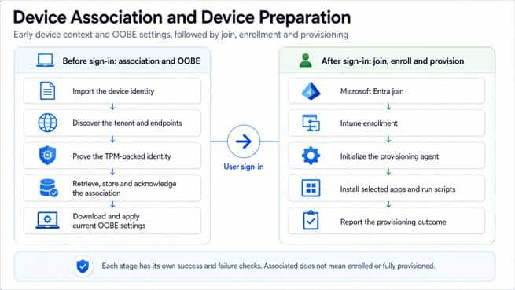
During this part of setup, Windows starts management synchronization, obtains and initializes the provisioning agent, and follows its progress. The progress page reflects the provisioning result, including errors; it is not just waiting for the association flag to change. For background on the original flow, see my earlier Device Preparation walkthrough. It predates Device Association, so its original OOBE limitations need to be read in that context.
Finishing the provisioning work tracked by OOBE also does not mean every background management policy has finished applying. Keep the result of this deployment stage separate from everything Intune may deliver after the user reaches the desktop.
What happens after a wipe or reinstall?
A full Windows wipe or reinstall removes the installation’s local state, but normally leaves the UEFI association in place. Fresh OOBE can use that association to find the tenant and request current settings when network access becomes available. Here I mean a full wipe or reinstall, not the separate Windows Autopilot Reset feature.[TR10]
{kind=link}
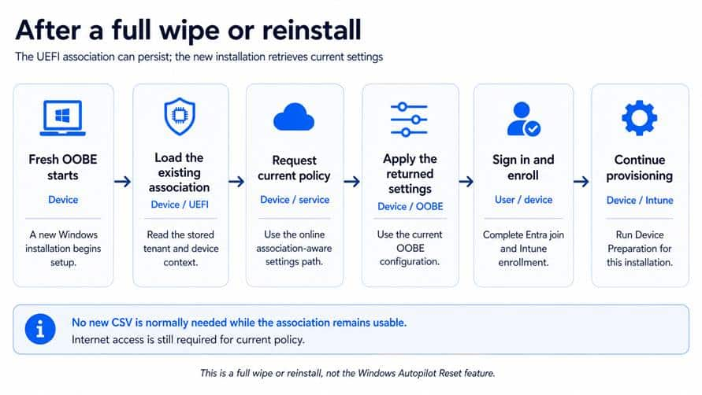
As long as the association is still usable and the service accepts the device, this reuse path does not require exporting another CSV and repeating pre-association. The relationship is already there. What the new Windows installation needs is the current policy and its own enrollment.
The policy may have changed since the previous deployment. Windows is not restoring a complete old OOBE policy from firmware. It requests current settings, which may give the new installation different OOBE behavior or a different naming template.
Remove the association when the device leaves
Persistence is convenient for redeployment, but it matters when hardware leaves the organization. Reinstalling Windows or deleting an Intune managed-device record does not by itself clear the association stored in UEFI.
For a fully associated device, follow Microsoft’s removal procedure. Unenroll it from active MDM management first; otherwise a later check-in can associate it again. Clear the association on the physical device, then remove the association record from Intune. Deleting the managed-device record and deleting the Device Association record are different operations.
A device that is only Pre-associated has not completed the association stage and can have its pending record removed in Intune. Avoid turning an old screenshot’s variable names into a universal firmware-removal script: the published examples and this lab do not use identical names. Verify the current supported procedure for the device before changing firmware data.
What Device Association changes for Device Preparation
The useful change is the timing. Windows can recognize the expected physical device before a user signs in, prove its TPM-backed identity, and obtain a signed association for the tenant. That association survives outside the Windows installation and gives a later OOBE session the context needed to request settings.
{kind=link}
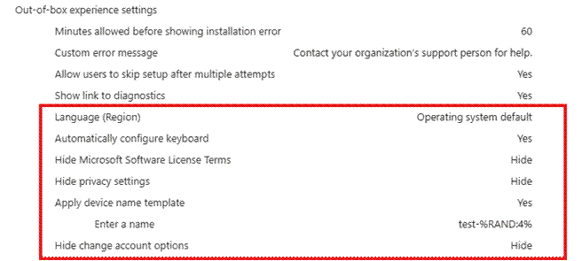
That is what connects the CSV at the beginning of this walkthrough to the customized setup screens at the end. The import creates the expected record, the device completes the association, and the policy download supplies the settings. Entra join, Intune enrollment, and Device Preparation then continue with their own work.
This adds early OOBE configuration to Device Preparation. It does not make classic Autopilot pre-provisioning, sometimes called White Glove, available through Device Preparation; Microsoft’s deployment comparison still lists that mode as unsupported. The value here is already concrete: a device-specific setup experience before the first sign-in, with a clearer checkpoint for each part of the process.